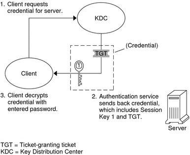
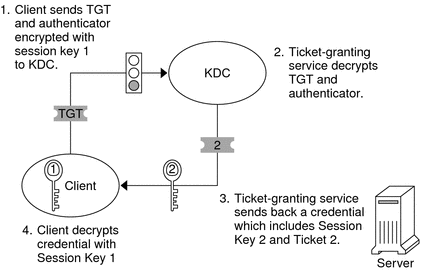

Document Information
Preface
Part I Security Overview
1. Security Services (Overview)
Part II System, File, and Device Security
2. Managing Machine Security (Overview)
3. Controlling Access to Systems (Tasks)
4. Virus Scanning Service (Tasks)
5. Controlling Access to Devices (Tasks)
6. Using the Basic Audit Reporting Tool (Tasks)
7. Controlling Access to Files (Tasks)
Part III Roles, Rights Profiles, and Privileges
8. Using Roles and Privileges (Overview)
9. Using Role-Based Access Control (Tasks)
10. Role-Based Access Control (Reference)
11. Privileges (Tasks)
12. Privileges (Reference)
Part IV Solaris Cryptographic Services
13. Solaris Cryptographic Framework (Overview)
14. Solaris Cryptographic Framework (Tasks)
15. Solaris Key Management Framework
Part V Authentication Services and Secure Communication
16. Using Authentication Services (Tasks)
17. Using PAM
18. Using SASL
19. Using Solaris Secure Shell (Tasks)
20. Solaris Secure Shell (Reference)
Part VI Kerberos Service
21. Introduction to the Kerberos Service
22. Planning for the Kerberos Service
23. Configuring the Kerberos Service (Tasks)
24. Kerberos Error Messages and Troubleshooting
25. Administering Kerberos Principals and Policies (Tasks)
26. Using Kerberos Applications (Tasks)
27. The Kerberos Service (Reference)
Kerberos Files
Kerberos Commands
Kerberos Daemons
Kerberos Terminology
How the Kerberos Authentication System Works
Using Kerberos Encryption Types
Using the gsscred Table
Notable Differences Between Solaris Kerberos and MIT Kerberos
Part VII Solaris Auditing
28. Solaris Auditing (Overview)
29. Planning for Solaris Auditing
30. Managing Solaris Auditing (Tasks)
31. Solaris Auditing (Reference)
Glossary
Index
|
Gaining Access to a Service Using Kerberos
To access a specific service on a specific server, the user must
obtain two credentials. The first credential is for the ticket-granting ticket (known as the
TGT). Once the ticket-granting service has decrypted this credential, the service creates a
second credential for the server that the user is requesting access to. This
second credential can then be used to request access to the service on
the server. After the server has successfully decrypted the second credential, then the
user is given access. The following sections describe this process in more detail.
Obtaining a Credential for the Ticket-Granting Service
To start the authentication process, the client sends a request to the authentication server for a specific user principal. This request is sent without encryption. No secure information is included in the request, so it is not necessary to use encryption. When the request is received by the authentication service, the principal name of the user is looked up in the KDC database. If a principal matches the entry in the database, the authentication service obtains the private key for that principal. The authentication service then generates a session key to be used by the client and the ticket-granting service (call it Session key 1) and a ticket for the ticket-granting service (Ticket 1). This ticket is also known as the ticket-granting ticket (TGT). Both the session key and the ticket are encrypted by using the user's private key, and the information is sent back to the client. The client uses this information to decrypt Session Key 1 and Ticket 1, by using the private key for the user principal. Because the private key should only be known by the user and the KDC database, the information in the packet should be safe. The client stores the information in the credentials cache.
During this process, a user is normally prompted for a password. If the
password the user specifies is the same as the password that was
used to build the private key stored in the KDC database, then the
client can successfully decrypt the information that is sent by the authentication service.
Now the client has a credential to be used with the ticket-granting service.
The client is ready to request a credential for a server. Figure 27-2 Obtaining a Credential for the Ticket-Granting Service
Obtaining a Credential for a Server
To request access to a specific server, a client must first have obtained a credential for that server from the authentication service. See Obtaining a Credential for the Ticket-Granting Service. The client then sends a request to the ticket-granting service, which includes the service principal name, Ticket 1, and an authenticator that was encrypted with Session Key 1. Ticket 1 was originally encrypted by the authentication service by using the service key of the ticket-granting service. Because the service key of the ticket-granting service is known to the ticket-granting service, Ticket 1 can be decrypted. The information in Ticket 1 includes Session Key 1, so the ticket-granting service can decrypt the authenticator. At this point, the user principal is authenticated with the ticket-granting service. Once the authentication is successful, the ticket-granting service generates a session key for the user principal and the server (Session Key 2), and a ticket for the server (Ticket 2). Session Key 2 and Ticket 2 are then encrypted by using Session Key 1. Because Session Key 1 is known only to the client and the ticket-granting service, this information is secure and can be safely sent over the network. When the client receives this information packet, the client decrypts the information by using Session Key 1, which it had stored in the credential cache. The client has obtained a credential to be used with the server. Now the client is ready to request access to a particular service on that server.
Figure 27-3 Obtaining a Credential for a Server
Obtaining Access to a Specific Service
To request access to a specific service, the client must first have obtained a credential for the ticket-granting service from the authentication server, and a server credential from the ticket-granting service. See Obtaining a Credential for the Ticket-Granting Service and Obtaining a Credential for a Server. The client can then send a request to the server including Ticket 2 and another authenticator. The authenticator is encrypted by using Session Key 2. Ticket 2 was encrypted by the ticket-granting service with the service key for the service. Because the service key is known by the service principal, the service can decrypt Ticket 2 and get Session Key 2. Session Key 2 can then be used to decrypt the authenticator. If the authenticator is successfully decrypted, the client is given access to the service.
Figure 27-4 Obtaining Access to a Specific Service
|